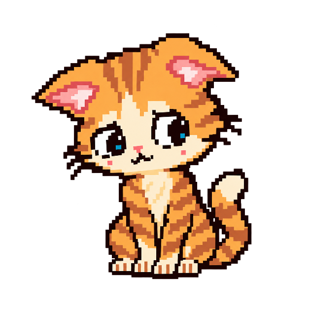

* CAT looked up from the assignment.
* Maya was already finished.
* Noah mentioned a 100%.
* Eli said, “That was easy.”
* CAT's brain has opened an unofficial class ranking.
* CAT looked up from the assignment.
* Maya was already finished.
* Noah mentioned a 100%.
* Eli said, “That was easy.”
* CAT's brain has opened an unofficial class ranking.

Maya can be finished. Noah can have a 100%. Eli can call something easy.
Those moments still do not calculate Cat's place in the room.
Cat knows what is on Cat's own screen and what to do next.
A FEW SNAPSHOTS ARE NOT A SCOREBOARD.
ENCOUNTER COMPLETE.
RETURN TO MAP